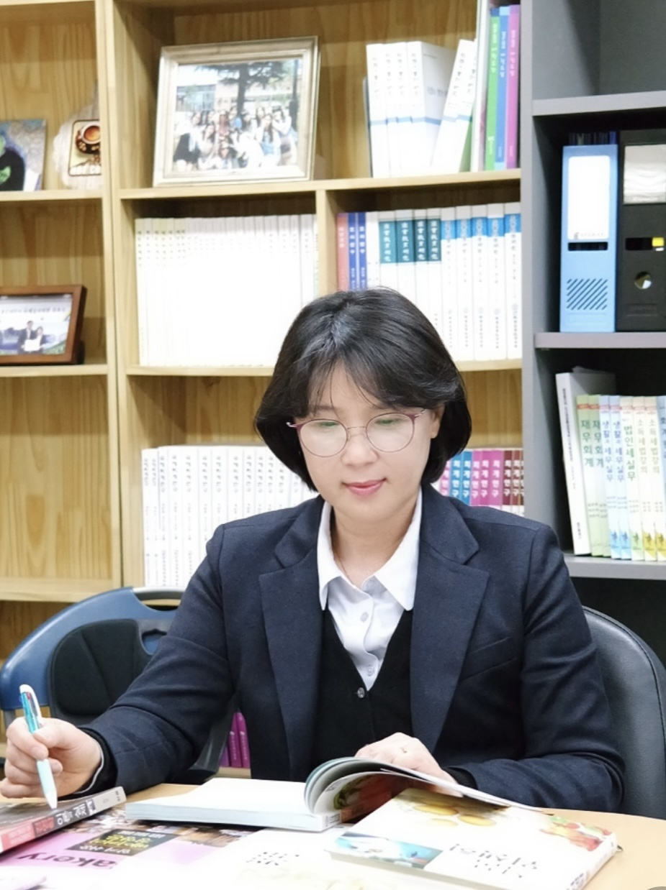

학과 소개
베이커리학과
Department of Bakery
- - 성인학습자 및 산업체 재직자를 위한 학위 취득 정규 교육 과정
- - 베이커리 재직자를 위한 고급 제과제빵기술 및 관리자 양성 과정
- - 식음료 분야 창업 희망자를 위한 창업 실무 및 컨설팅 과정
- - 과제빵분야 신규 진입자를 위한 제과제빵 기초 기술 및 실무 과정
학과장님 소개

- 박미희 학과장(전임교수)
- 담당과목: 베이커리경영학, 금융실무, 창업회계
- 연구실번: 호송담관 208호
- 전화번호: 031-330-9352
- 이메일: mhparkgun@ysc.ac.kr